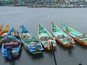

The fisherman sustained injuries in his eye. The twin incidents have caused much apprehensions among the fisherfolk, fishermen representatives told news agency PTI.
An Tamil Nadu fisherman sustained injuries to his eye after being allegedly attacked by the Sri Lankan Navy which also arrested 14 fishers for alleged maritime boundary violation, an official said. The injured fisherman was identified as Johnson of Rameswaram and he was injured in his eye when the Lankan naval personnel attacked him late on Wednesday, he said.
Further, 14 fishermen, belonging to Nagapattinam district of the state were apprehended by the Lankan Navy. Their boat was so seized. The twin incidents have caused much apprehensions among the fisherfolk, fishermen representatives said.
Last month, a fisherman of Vanagiri village in Mayiladuthurai district was injured after being shot by Indian navy, while they were trying to intercept a “suspicious boat” in Palk Bay, near the maritime border with Sri Lanka.